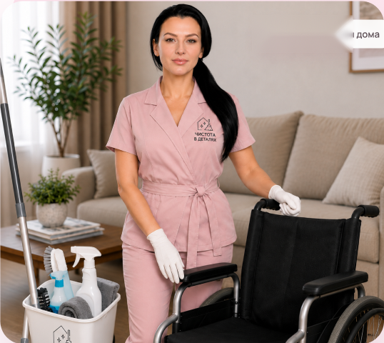
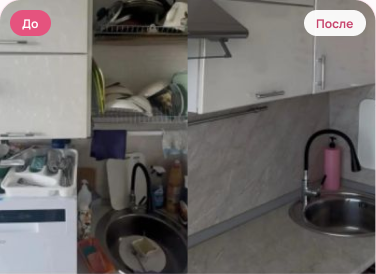
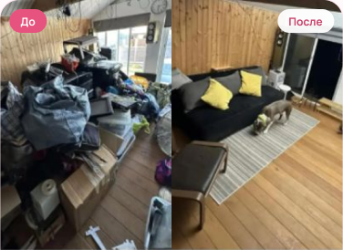
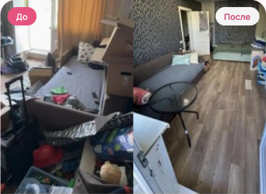

1
Спокойный процесс
Взаимодействие настраивается так, как комфортно вам.
- Минимум общения по желанию
- Один специалист вместо бригады
- Паузы во время работы без оценок и комментариев
- Предупреждение о переходе в другую зону
Уборка, адаптированная под ваши потребности: физические, сенсорные и бытовые. Подходит людям с ограниченной мобильностью и инвалидностью, пожилым, нейроотличным людям, при тревожности, чувствительности к шуму и запахам — и всем, кому временно нужна бытовая поддержка.
Главный принцип — уборка подстраивается под человека, а не человек под стандартный сценарий уборки.

В комплекс входит базовый состав — дальше настраиваем под ваши условия.
Не нужно подтверждать инвалидность, показывать документы или называть диагноз — достаточно рассказать, какие условия важно соблюдать.
Помощь с простыми бытовыми задачами, химчистка и глубокая обработка добавляются по согласованию.
Все условия фиксируем до начала работы — и соблюдаем их каждый визит
Взаимодействие настраивается так, как комфортно вам.
Шум и химия — по договорённости, а не по умолчанию.
Привычное расположение вещей сохраняется.
Покидать квартиру на время уборки не нужно.
Можно заранее задать порядок работ и сохранить его для всех визитов.
Чек-лист собираем вместе — можно убрать всю квартиру или только нужные зоны
По договорённости все вещи остаются строго на своих местах.
Продукты и личные вещи не выбрасываются без согласования.
Глубокая очистка сантехники и швов — по отдельному согласованию.
Дополнительно по запросу добавляется к любой зоне — обсуждаем до начала работ.
Расскажите, что из этого про вас — подберём формат работы
Специалист берёт на себя физически тяжёлые задачи.
Проходы не загромождаются, коляска, ходунки и трость не перемещаются без разрешения.
Средства и способ уборки подбираем под ваши ограничения.
Клининг не медицинская процедура и не гарантирует полного удаления аллергенов.
Работаем постепенно и без осуждения — с самого важного.
При большом объёме уборка разбивается на несколько визитов.
Это обычная бытовая задача, а не повод для неловкости. Работаем спокойно и без комментариев: сначала убираем источник, потом очищаем и обрабатываем поверхность.
Если загрязнение глубоко проникло в матрас, мягкую мебель или деревянное покрытие, может понадобиться химчистка или несколько этапов обработки.
Состояние квартиры не оценивается и не комментируется, беспорядок или запах — не повод для неловкости.
Все ограничения обсуждаются заранее и соблюдаются, мы не решаем за вас, как должен выглядеть ваш дом.
Список и последовательность работ известны заранее, новые действия не добавляются без необходимости.
Личная информация, особенности быта и состояние квартиры не обсуждаются с посторонними.
Инклюзивная уборка — клининговая и бытовая услуга. Она не заменяет медицинскую или социальную помощь по уходу, но может дополнять её.
Обсудить задачу →И когда нужен уход, а не клининг
Если человеку нужен профессиональный уход, уборку можно заказать как отдельную бытовую услугу — в дополнение к нему
Связываетесь удобным способом — можно только перепиской.
Рассказываете, какие помещения нужны и какие задачи важнее всего.
Сообщаете практическую информацию: шум, средства, вещи, которые нельзя трогать, формат общения.
Вместе фиксируем список работ, порядок комнат и ограничения.
Специалист работает строго по согласованному чек-листу и предупреждает о переходах.
Проверяете работу. При желании сохраняем формат для следующих визитов.
Сохраняем чек-лист, разрешённые средства, порядок работ и по возможности того же специалиста — не придётся объяснять всё заново.
Публикуем только с разрешения клиента



Всё привозим с собой — при необходимости работаем вашими средствами
По предварительной договорённости возможно использование:
Ваше доверие — наша лучшая награда
Вызывала клинера на генеральную уборку кухни. Перед заказом всё обсудили: что убираем, какими средствами будем пользоваться. Всё очень понравилось — я находилась дома и видела, как быстро и качественно производится уборка. Все договорённости были соблюдены, девушка приехала без опозданий. В общем, я в восторге! Рекомендую!
Спасибо большое за генеральную уборку в ванной комнате для моих родителей! Всё чисто, всё блестит! С менеджером договорились по телефону, клинер приехала без опозданий, день в день — клининг нужен был срочно. Я попросила использовать только эко-средства, привезли с собой. Всю новую ветошь при мне вскрывали — это очень впечатляет. Обязательно пригласим следующий раз!
Заказывала уборку квартиры, клинер приехала вовремя, сразу нашли общий язык. Все средства были привезены клинером: новые губки и тряпки, хорошие моющие средства. Результат превзошёл ожидания, воздух в квартире сразу стал чище. Я так идеально не уберусь! Буду постоянным клиентом.
Всё прошло замечательно, дедушку приглашаю не первый раз! Быстро, аккуратно, конструктивно. Спасибо!
Расскажите, что нужно убрать и какие условия важно соблюдать — диагноз и документы не нужны — только практическая информация для специалиста.
Фото можно приложить, но это необязательно
Нажимая кнопку, вы соглашаетесь с политикой обработки персональных данных
Об инклюзивной уборке — коротко и по делу